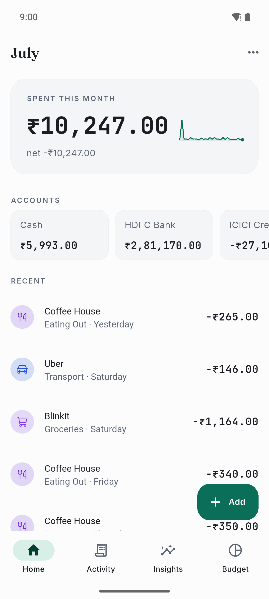
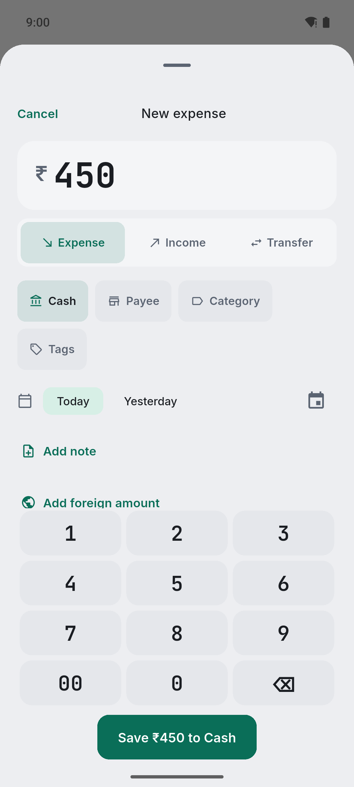
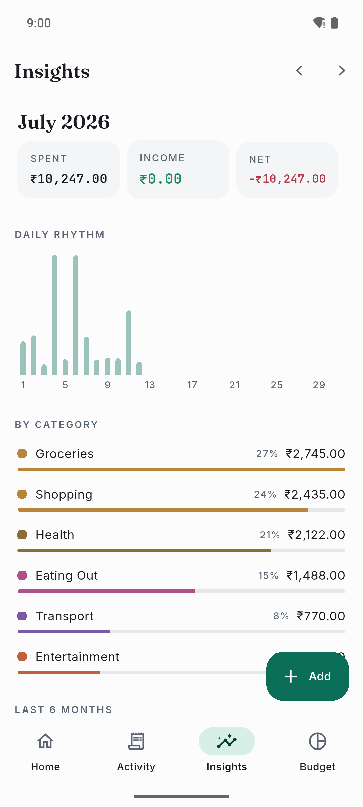

Local-first expense tracker
Your money stays on your phone.
Gullak keeps your ledger on your device, not in someone else's cloud. Log an expense in three taps. Sync and AI are optional — and when you want them, you run the server.

Frictionless capture
Log it before you forget it.
Type an amount and save. Or describe the spend in plain words — "450 groceries at the market" — and let AI fill the fields. Snap a receipt and it reads the total for you.
- Manual entry tuned for repeat payees: amount to saved in three taps
- Describe-in-text and scan-a-receipt parsing (runs on your server)
- Splits, transfers, tags, and a system share-sheet target

SMS inbox
Bank texts become drafts you approve.
On Android, Gullak reads your bank SMS, sends them to your own server to parse, and hands you a review queue. Each message becomes a draft transaction — confirm the right ones with a single tap.
- All parsing happens on a server you control — nothing is sent to a third party
- Triage by bucket, expand any message to see the original text
- Learned payee-to-category mappings get better as you confirm

Insights & budgets
Answer “where did my money go?” in one screen.
Trends, spending by category, and a spend heatmap — drawn with a hand-rolled chart kit, no bloated dependency. Set monthly envelopes and watch category rings fill as you spend.
- Daily bars, category breakdown, six-month trend, and a day heatmap
- Monthly budget envelopes with per-category progress rings
- Every chart is paired with the numbers as text — accessible by default

Optional & self-hosted
Sync your devices and chat over WhatsApp.
Run the sync server on a Raspberry Pi, a VPS, or anywhere Docker runs. It merges changes across devices, holds your AI keys, and can bridge a conversational assistant to WhatsApp. Bring your own model provider.
- Bidirectional, offline-first sync — last-write-wins, idempotent on retry
- Log, edit, and query expenses by chat, in-app or over WhatsApp
- Opt-in mirroring to Google Sheets and Actual Budget

Private by design
No trackers. No analytics. No cloud you didn't choose.
Local-first
The phone is the source of truth. Your data works fully offline and never needs a server to be useful.
Your server, your keys
Sync and AI run on infrastructure you own. The app never stores model provider credentials.
Nothing phoned home
No third-party SDKs, no ad networks, no telemetry. Crash reporting, if it ever ships, is strictly opt-in.
Install
Get Gullak
Android today. The full-featured build (with SMS capture) is on GitHub Releases; F-Droid is on the way.
Self-host the server
One container, one volume.
The sync server is a small Node service backed by SQLite. Point the app at it in Settings → Sync server and you're synced. Full Docker, env, and reverse-proxy docs are in the self-hosting guide.
docker compose up -d # app → Settings → Sync server # https://gullak.example.com